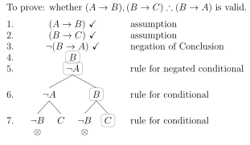

in the previous lecture we looked at the motivation for trees for
PL
we looked at the motivation for the particular tree rules
in this lecture we look at how we construct trees and how we use
them to test for various logical properties
this lecture really only gives a general overview of how to
construct trees
in the live lecture and the tutorials we will do lots of
examples
learning outcomes
after doing the relevant reading for this lecture, listening to the
lecture, and attending the relevant tutorial, you will be able to:
construct trees for propositions of PL
use trees to determine whether arguments in PL are valid and to find
counterexamples to invalid arguments
use trees to test for various logical properties of PL propositions
and to read off assignments from open paths
applying the rules
applying the rules
let’s look at how we apply the rules . . .
which rule to apply
before you apply a rule ask yourself: what is the main connective?
if it is anything but negation, then apply the relevant rule
if it is negation, look for the main connective of the negand and
apply the relevant rule
suppose you have:
is this right?
no, it is wrong
is this right?
yes. here the main connective is negation, and the main connective
of the negand is disjunction.
before you apply a rule ask yourself: what is the main connective?
if it is anything but negation, then apply the relevant rule
if it is negation, look for the main connective of the negand and
apply the relevant rule
testing a single proposition for satisfiability
suppose we want to test whether the following proposition is
satisfiable:
we begin by writing this proposition on the first line
notice that the assumption is not checked
then we apply the rule for the conditional
remembering to check off the assumption
notice that we have now checked the assumption, since we have
applied the rule
now we ask: have we applied all the rules we can apply?
no
now we apply the rule for the conditional again
now we ask: have we applied all the rules we can apply?
yes
this tree is complete
the notion of a path
a helpful notion in thinking about trees is the notion of a
path
a path through a tree is a complete route from the
topmost proposition down until one can go no further
for example, suppose we have this tree:
here is one path through the tree:
here is another path through the tree:
if at any point we find that a path contains both a formula and its
negation, we close the path with a
cross
so, for example, the path above contains both
and
.
applying rules on every open path
suppose you have the following unfinished tree:
the rule for conditional has not been applied to the conditional on
the third line
there are two open paths through this tree
the tree rules must be applied on all open paths on which the
formula it is being applied to is on.
if you apply the rule correctly this is the tree you get:
it is important, however, to apply the rule only on the path on
which the wff is on
suppose you have this tree
the next step is not:
these are not on the same path:
what is wrong with the following tree?
the path with B and
B
should have been closed.
it should have looked like this:
every time you add wffs to the tree you must check for
closure
this applies when you first write down your assumptions, and applies
again whenever you apply a rule
the order of the rules
the order of the rules
it doesn’t matter which order you apply the rules
however, it is often convenient to apply non-branching rules first
whenever you have a choice between non-branching and branching
rules
to see why, suppose we have:
branching first:
non-branching first:
there’s only a small difference here (2 wffs to be exact)
but the difference can be significant with bigger trees
another good idea is to apply rules which will give you a closed
branch first
but this requires some foresight
want to build trees which look exactly like the trees which the
program I use to generate answers look?
mechanically follow these steps
step 1. from the top down, apply double negation
rule and check for contradictions, until you can’t. go to step 2.
step 2. from the top down, apply any non-branching
rule, check for contradictions, and do step 1, until you can’t.
(conjunction first, negated disjunction next, then negated conditional).
go to step 3.
step 3. from the top down, apply a branching rule
if you can, check for contradictions, and return to step 1. (disjunction
first, conditional next, biconditional, then negated biconditional). if
you can’t apply a branching rule (or any other rules for that matter),
you are done!
if you do this then . . .
the input and output of the double negation rule will always be
together
you will never miss a contradiction (think of checking for
contradictions as part of what you do when you apply a rule)
you will never apply a branching rule before you could have applied
a non-branching rule
what trees do
what trees do
the rules specify things to write which must be true assuming that
the propositions at the top of the tree are true
the rules are constructed so that if the propositions at the top of
the tree are true, then there is at least one path such that everything
on that path is true
each path represents an alleged way for the propositions at the top
all to be true together: an alleged assignment of truth values to basic
propositions that makes the propositions at the top true
this is only an alleged way for them to be true together, since some
paths close
a closed path does not represent a possible assignment of values at
all, while an open path represents a possible assignment of values on
which the propositions at the top are all true
suppose that all paths close
then the propositions at the top are unsatisfiable: there is no way
of making them all true
but suppose a path remains open: then the propositions at the top
are satisfiable: there is an assignment of truth values to basic
propositions that makes them all true
this is what allows us to “read off’ an assignment of values to
basic propositions on which our initial propositions are all true
testing for satisfiability
testing for satisfiability
in the first instance, trees allow us to test whether a given set of
propositions is satisfiable or not
if we know how to set things up properly, we can use trees to test
for other properties too
if all of the paths close, then the propositions are not jointly
satisfiable
if a path remains open, then the propositions are jointly
satisfiable
all paths close, so the propositions are not jointly
satisfiable
all paths close, so the propositions are not jointly
satisfiable
the tree is finished and there is an open path
we read off an assignment on which the propositions are true.
:
T,
:
T
left path yields:
:
T,
:
T,
:
T
right path yields:
:
T,
:
T.
either:
:
T,
:
T,
:
T or
:
T,
:
T,
:
F.
so one tree can yield multiple assignments
there are two open paths
this path yields:
:
T,
:
F
this path yields:
:
T,
:
F
so different paths can yield the same assignment
one tree can yield multiple assignments
different paths can yield the same assignment
every truth-making assignment, if there are any at all, can be read
of some path
none are overlooked
testing for validity
testing for validity
validity: is it possible for the premises to be true and the
conclusion false?
is it possible for the premises to be true and the negation of the
conclusion to be true?
is the set containing the premises and the negation of the
conclusion satisfiable?
if all of the paths close, then the argument if valid.
if any paths remain open, then the argument is invalid.
as with truth tables, if an argument is invalid, we can read off a
counterexample
the counterexample is provided by the basic propositions and
negations of basic propositions on an open path
we assign T to the basic propositions on an open path, and F to the
basic proposition which is the negand of the negation on an open
path

a counterexample:
:
true,
:
true,
:
false
the relevant row of the truth table looks like this:
F
T
T
T
T
F
testing for contraries and contradictories
testing for contraries and contradictories
if the propositions are jointly satisfiable, they are not contraries
or contradictories
if they are not jointly satisfiable, they are either contraries or
contradictories, but we need a further test to determine which
if the propositions are jointly satisfiable then they are
contraries
if they are not jointly satisfiable, then they are
contradictories
testing for tautologies and logical truths
testing for tautologies and logical truths
tautology: is it possible for the proposition to be false?
is it possible for the negation of the proposition to be true?
is the set containing the negation of the proposition satisfiable?
if it is not, then it is a tautology
if the negation of the proposition is not satisfiable (if all paths
close), then the proposition itself is a logical truth.
testing for equivalence
testing for equivalence
equivalent: is it possible for one proposition to be true while the
other is false or vice versa?
is the biconditional constructed from the propositions a
tautology?
is the set containing the negation of the biconditional constructed
from the propositions unsatisfiable? If it is, then they are
equivalent
if the negated biconditional is not satisfiable (all paths close)
then the propositions are equivalent.
wrapping up
this lecture
trees can be used to test for various properties
once you know how to build trees, all you need to know is how to set
them up the right way to test for various properties, and how to
understand the results of your test